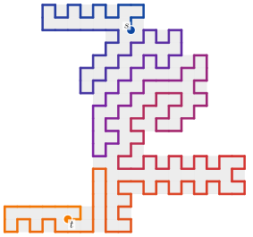
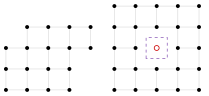
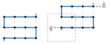
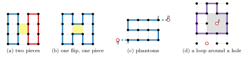
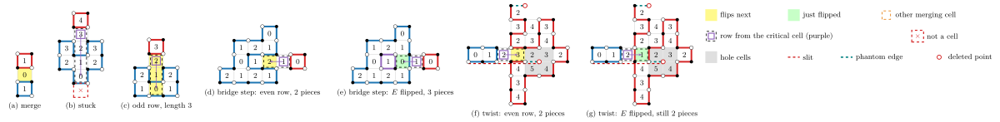
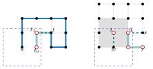
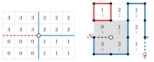
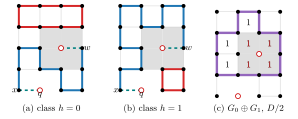
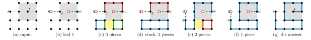
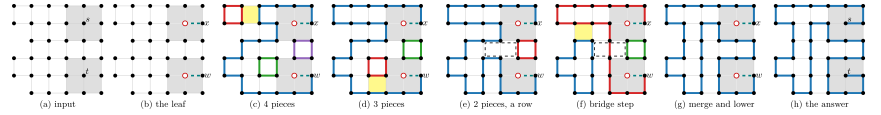

A grid graph is a finite set of lattice points with every unit edge between two of its points.
It is solid when it has no holes.
We give an algorithm that decides, for a solid grid graph \(V\) and two distinct points
\(s, t \in V\), whether \(V\) has a Hamiltonian path from \(s\) to \(t\).
Correctness and a polynomial step bound are proved in Lean 4 with Mathlib.
The main theorem decideHamPath_main states that the algorithm returns
true exactly when a Hamiltonian \(s\)–\(t\) path exists, and that it takes at most
\(5\,220\,000\,(|V|+3)^6\) steps of explicit cost functions.
Its only axioms are propext, Classical.choice and Quot.sound.
The algorithm extends Sheffield's height-function algorithm for Hamiltonian cycles.
Each endpoint gets a phantom edge to a missing neighbour, which moves its degree-one defect off
the vertex set.
An endpoint with all eight king neighbours present is deleted and becomes a hole, and its
degree-one defect is a vortex of the height field.
A slit height and a quadrant label give a potential that rises along every arc, which replaces
the height function in Sheffield's counting argument.
The count behind a stuck phase is proved with chained rows, straight runs of rows through
several cuts.

A grid graph is given by a finite set \(V \subset \mathbb{Z}^2\) of lattice points. Its edges are the unit segments between two points of \(V\). A Hamiltonian \(s\)–\(t\) path visits every point of \(V\) exactly once, starting at \(s\) and ending at \(t\). For general grid graphs, deciding whether such a path exists is NP-complete (Itai, Papadimitriou and Szwarcfiter, 1982). A grid graph is solid when it has no holes, that is, when every missing point can reach the outside of \(V\) by king moves through missing points.


Itai, Papadimitriou and Szwarcfiter posed the solid case in 1982, and it has been listed as open since (Keshavarz-Kohjerdi 2011, Keshavarz-Kohjerdi and Bagheri 2016). For Hamiltonian cycles in solid grid graphs, Umans and Lenhart (1997) gave a polynomial algorithm, and Sheffield (2000) gave a second one based on height functions. Sheffield's introduction remarks that similar results hold for paths with fixed endpoints. This work gives a written proof of the path case and checks it in Lean.
Theorem (decideHamPath_main).
Let \(V \subset \mathbb{Z}^2\) be finite and solid, and let \(s \ne t\) be points of \(V\).
Then decideHamPath V s t = true if and only if there is an edge set \(H\) of the
grid graph on \(V\) with degree 1 at \(s\) and \(t\), degree 2 at every other point, and one
connected component.
The cost decideHamPathCost V s t is at most \(5\,220\,000\,(|V|+3)^6\).
theorem SolidGridHam.HP.decideHamPath_main {V : Finset Pt} {s t : Pt}
(hs : Solid V) (hst : s ≠ t) (hsV : s ∈ V) (htV : t ∈ V) :
(decideHamPath V s t = true ↔ ∃ H, IsFactor V (dST s t) H ∧ ncomp V H = 1) ∧
decideHamPathCost V s t ≤ 5220000 * (V.card + 3) ^ 6
An edge set with these degrees and one component is exactly a Hamiltonian \(s\)–\(t\) path. An endpoint is inner when all eight of its king neighbours lie in \(V\). The algorithm dispatches on which endpoints are inner, and each case has its own proved bound.
| \(s\) | \(t\) | Lean theorem | Bound |
|---|---|---|---|
| not inner | not inner | boundaryEndpoints_main | \(1\,060\,000\,(|V|+3)^4\) |
| exactly one inner | oneHoleCase_main | \(2\,513\,000\,(|V|+3)^5\) | |
| inner | inner | twoHoleCase_main | \(5\,217\,000\,(|V|+3)^6\) |
| all cases, plus the dispatch | decideHamPath_main | \(5\,220\,000\,(|V|+3)^6\) | |
Running time is stated through explicit cost functions written beside each algorithm in Lean. Primitive operations on finite sets (membership, insertion, a cell flip) are charged a constant. The bound is proved for these functions, not for a machine model, and a machine implementation may have a larger exponent, though still polynomial.
Sheffield's algorithm decides Hamiltonian cycles in solid grid graphs. It starts from any 2-factor, a set of edges with degree 2 at every point, which splits \(V\) into disjoint cycles called pieces. It then flips unit cells, toggling their four sides, to join pieces one at a time. A height function on the cells orders these flips so that the search cannot run in circles. When no more pieces can be joined, a locally checkable certificate proves that no 2-factor has fewer pieces, so no Hamiltonian cycle exists. In a solid grid graph every 2-factor can be reached from every other by flips, so one run decides the question.

The path algorithm reduces the path problem to situations where this machinery still works. Every component exists for one of two reasons. Either it restores a hypothesis of Sheffield's argument that a path endpoint breaks, or it pays for that repair with a bounded amount of branching.

Each round of the loop is a phase and a reduction.
A phase joins pieces by flipping a merging cell, and when none exists it builds bridges, flips
that split a piece to expose a merging cell.
The reduction then undoes or lowers the bridges, and the round ends with one piece fewer.
If a phase is stuck, the certificate proves that no factor has fewer pieces.
Sheffield's count for a stuck phase has a gap, which this work closes with chained rows,
straight runs of rows through several cuts (stuck_minimal).
A Hamiltonian path has degree 1 at \(s\) and \(t\), while Sheffield's local rules and his height function both use degree 2 at every point. The repair is a phantom. If an endpoint has a missing lattice neighbour \(p\), the edge from the endpoint to \(p\) is added. The endpoint then has degree 2, and the degree-one defect sits at \(p\), outside \(V\), where no cell is ever flipped. With phantoms at both endpoints, the phase and the certificate work again, provided the endpoints are at king distance at least 2 (Far) and their phantoms do not point away from each other across a gap of 2 (not opposed).
An endpoint may have no usable phantom. Then the algorithm deletes the endpoint and branches over its neighbour \(w\) on the path. \(V\) has a Hamiltonian \(s\)–\(t\) path exactly when \(V \setminus \{t\}\) has one from \(s\) to some neighbour \(w\) of \(t\), and the deleted \(t\) becomes the phantom of \(w\). Repeating this is a deletion walk. Each end of the branching is a leaf, where the algorithm runs a final test. A potential on the ring of king neighbours shows that a walk makes at most 13 final tests, and there are at most 208 in every case, a constant. When \(s\) and \(t\) are far apart, the walks stop right after the first deletions.

An inner endpoint has no missing neighbour to take a phantom. Deleting it leaves a one-point hole, and the deleted endpoint becomes the phantom of its neighbour on the path, so the degree-one defect sits at the hole's centre. Around this point the arcs that define the height do not balance, which is called a vortex, and no height function exists. Two things are lost, and each is put back separately.
The order of the flips. The height is replaced by a slit height that jumps across one ray from the vortex, plus a quadrant label. The combination \(2\tau + \mathrm{lab}\) still rises along every arc, which is the only property the certificate uses.

Reachability by flips.
Fix one factor \(F\) of the leaf as a reference.
Any other factor \(G\) differs from \(F\) by a set of alternating cycles.
The signed number of these that go around the hole is the class of \(G\).
The cells around the hole are not cells of the graph, so no flip changes the class, and
factors in different classes cannot reach each other by flips.
The algorithm therefore enumerates the classes, at most \(2|V|+1\) per hole, builds the least
factor of each class by a relaxation (classSearch), and runs Sheffield's loop in each
class.
The class enumeration is the main source of the polynomial degree.
Two inner endpoints give two holes and at most \((2|V|+1)^2\) class pairs.

\(V\) is the \(4 \times 4\) block without its top-left point, so \(|V| = 15\), with \(s = (0,2)\) and \(t = (2,2)\). \(t\) is inner and \(s\) is not, so the run goes through the one-hole case. The first leaf ends with a certificate that it holds no Hamiltonian path, and the second finds one.

When \(s\) and \(t\) are far apart, the walks stop at once and the work is in the loop. This run on 34 points needs a bridge.

The formalization is about 47,000 lines of Lean 4 and Mathlib.
The algorithm decideHamPath and every definition that it and the main statement use
are in one file of about 950 lines,
lean/SolidGridHam/Algorithm.lean.
decideHamPath is computable.
No file contains sorry, the build has no warnings, and the main results use only
propext, Classical.choice and Quot.sound.
| Theorem | Statement |
|---|---|
decideHamPath_main | Correctness and the step bound, for every solid \(V\) and distinct \(s, t \in V\). |
stuck_minimal | The count behind the certificate for a stuck phase, with chained rows. |
ulhc_main | Hamiltonian cycles (Umans–Lenhart), correct in at most \(5 \cdot 10^8\,(|V|+1)^{12}\) steps of a step-counting monad. |
Lean checks everything except the following, which a reader checks by eye.
Pt, Edge, IsEdge,
deg, IsFactor, dST, ncomp and Solid.
Solid is cross-checked by computation against "every bounded face is a unit square",
not proved equivalent in Lean.decideHamPathCost and the cost functions it calls are
written beside the algorithm and follow its structure, but are not linked to it formally.The correctness statement is registered with the Palomar registry as PALOMAR-2026-10-19-000001. A full build takes about half an hour on four cores.
cd lean lake exe cache get lake build cd .. && scripts/check.sh
The repository has reference implementations in Python, C and JavaScript, each with a
command-line front end, and all of them return the path on a "yes" answer.
The Python reference mode ports each definition on the call path of decideHamPath
as one function with the same name, control flow and iteration order.
Its fast mode adds answer-preserving speedups, and the C and JavaScript implementations port the
fast mode.
The implementations are not verified.
python3 lib/python/gen.py -n 60 --shape stamp | python3 lib/python/hpst_cli.py --draw
The input is an ASCII grid with . for points, # or a space for missing
points, and s, t for the endpoints.
Nearly the entirety of the work for this project was done by Claude (Opus 5.5), including the algorithm, writing the paper, the reference implementations, the demo, the Lean 4 proof and the explainer video. The author contributed little more than the problem statement and guidance.